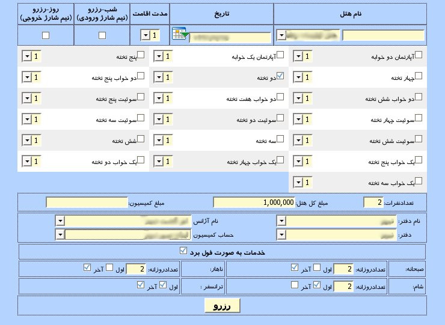
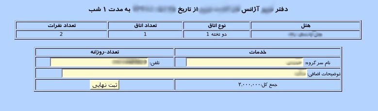
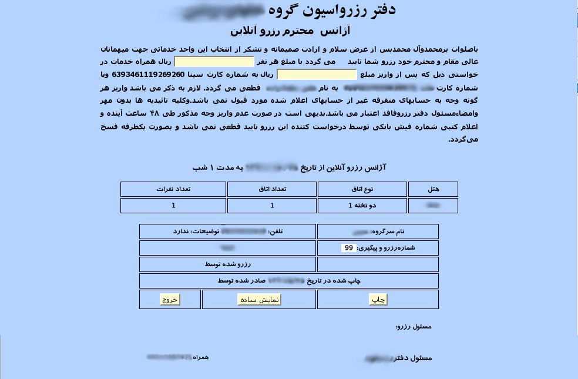

رزرو شناور هتل
نیاز روز افزون مدیریت هتل ها به مسئله رزرو موقت بر روی هتل های دیگر باعث شد طراحان این نرم افزار, پنل رزرو شناور را طراحی نمایند. این پنل زمانی کارآیی دارد که هنگام رزرو, هتل های موجود اتاق خالی برای مسافرین جدید نداشته و مسئول پذیرش به اجبار باید این رزرو را بر روی هتل دیگری بگیرد. بنابر این کاربر سیستم می تواند در این پنل نام هتل موقت را وارد کرده و رزرو را بر روی این هتل انجام می دهد.

جهت انجام رزرو ابتدا نام هتل را در کادر ابتدایی پنل وارد نمایید. در صورتی که قبلا بر روی هتل موقت مورد نظر رزروی انجام شده باشد نام هتل به لیست کنار کادر نام هتل اضافه شده و نام هتل را از لیست انتخاب نمایید سپس تاریخ مورد نظر را از تقویم تعبیه شده در کنار کادر از تاریخ انتخاب نمایید. حال هر نوع اتاقی که نیاز باشد از لیست انواع اتاق انتخاب نمایید. تعداد میهمانان را در کادر تعداد نفرات وارد نمایید. پس از آن قیمت رزرو را محاسبه و در کادر مبلغ کل هتل وارد نمایید. در صورتی که کمیسیونی بابت این رزرو پرداخت می شود مبلغ آن را در کادر سوم وارد نمایید.
قسمت بعدی پنل مربوط به نام دفتر و آژانس رزرو گیرنده می باشد. در صورتی که کمیسیونی بابت این رزرو پرداخت می شود نام دفتر و آژانس مورد نظر برای کمیسیون را نیز از کادر دوم انتخاب نمایید.قسمت سوم مربوط به خدمات انتخابی برای میهمان می باشد. اگر گزینه خدمات به صورت فول برد زده شود کل خدمات انتخاب می شود.پس از اطمینان از رزرو بر روی دکمه رزرو کلیک نمایید.

در این صفحه خلاصه اطلاعات رزرو نمایش داده می شود و باید نام سرگروه میهمانان و شماره تلفن سرگروه و توضیحات اضافی مربوط به رزرو را وارد نمایید. پس از تایید اطلاعات بر روی دکمه ثبت نهایی کلیک نمایید.

پس از ثبت نهایی رزرو, رسیدی شامل اطلاعات کامل رزرو به همراه شماره پیگیری نمایش داده می شود و در صورت نیاز می توان با کلیک بر روی دکمه چاپ رسید را چاپ نمایید.